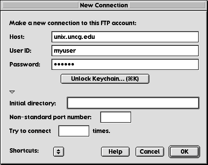
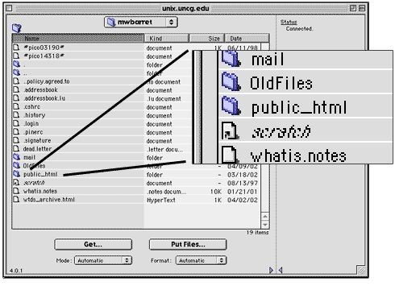
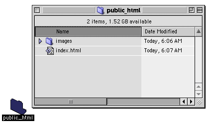

File Transfer Protocol refers to a standard set of rules, or "protocols" that computers use to transfer files over a network. So you can take files from your personal zip disk, and transfer them onto UNCG's web server.
Fetch is a commonly used FTP application for Macintosh computers. WS_FTP is a common FTP application for windows. Both work similarly.
Launch Fetch from the Apple Menu.
Choose "Open Connection" from the "File" menu. (If it hasn't automatically.)
You should see a dialogue box similar to the one below.

For "Host" enter "unix.uncg.edu"
For "User ID" enter your unix username (the one we used to set up your web space last week).
For "Password" enter your unix password (the one we used to set up your web space last week).
If you entered everything correctly, you should see a window similar to this:

You should see the "public_html" directory you created last week. Here it looks like a folder. Remember, the terms "directory" and "folder" mean basically the same thing.
Double-click the "public_html" folder. The pull-down menu at the top of the screen should now read "public_html" and you should see the "index.html" file we created last week.
Notice how similar the Fetch window is to a Finder window in list view? You can think of the Fetch window as a window into another computer.

You will notice two large buttons on the Fetch window.
To download files from the server, select the file(s) you want to download by clicking the file(s) once then click "Get".
Try downloading your "index.html" file.
To upload a file to the server, click "Put," then navigate to the file you want to upload.